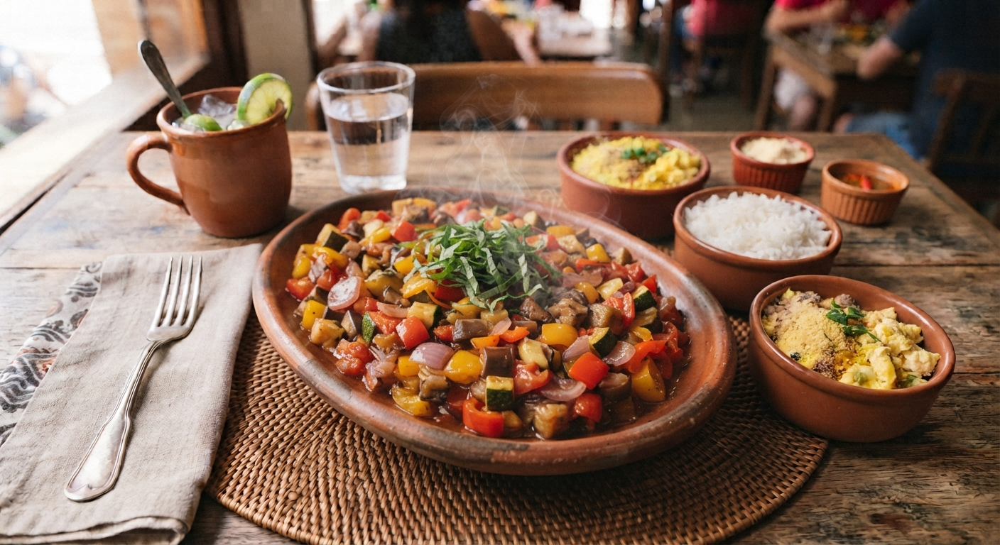

Ratatouille Provençal
Um clássico reconfortante da região da Provença, este prato vegetariano combina legumes frescos cortados finamente, cozinhados lentamente em azeite, ervas aromáticas e molho de tomate caseiro.

⏱️ Tempo: 1h 15min
🍽️ Rendimento: 4 porções
🔥 Dificuldade: Média
Ingredientes
- 1 beringela média fatiada
- 2 curgetes (abobrinhas) fatiadas
- 4 tomates maduros fatiados
- 1 cebola picada e 2 dentes de alho picados
- 1 lata de molho de tomate natural
- Azeite de oliva, tomilho e alecrim fresco a gosto
- Sal e pimenta-do-reino a gosto
Modo de Preparo
- Pré-aqueça o forno a 190°C.
- Numa assadeira, espalhe o molho de tomate refogado com a cebola, o alho e um fio de azeite.
- Disponha as rodelas de beringela, curgete e tomate de forma alternada e em círculos concêntricos sobre o molho.
- Tempere com sal, pimenta, folhas de tomilho, alecrim e regue com um generoso fio de azeite por cima.
- Cubra com papel manteiga e leve ao forno por cerca de 45 minutos. Retire o papel nos últimos 15 minutos para dourar levemente. Sirva quente.